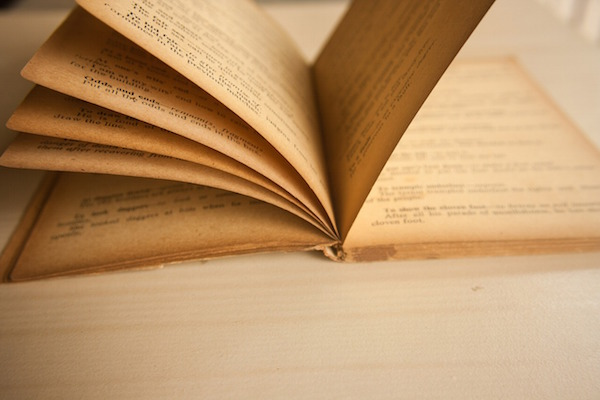

About
Founded in 1993, Books n' Beans had its humble beginnings as a resale store for outdated college textbooks. As its cult status in the community grew, so did customer demand for a reliable source of caffeine. Thus, the current iteration of Books n' Beans was born. We're open 7 days a week, offering impeccable coffee, fine pastries, and the most esoteric of publications. Stop in for a hot beverage—stick around for lost French translations of Howard Zinn! Sincerely, Your Friends at Books n' Beans